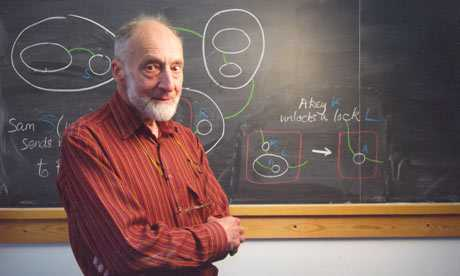

<div class="profile"><div>
  <div class="source">
ML (1972)
  </div>
  <div class="detail">
    
    <div class="search"><a href="http://www.google.com/cse?cx=partner-pub-6997921015773263:4467526896&ie=UTF-8&q=Robin Milner" target="_blank"></a> | <a href="http://en.wikipedia.org/wiki/Robin_Milner" target="_blank">wiki</a></div>
    <div class="name"><a href=" http://www.cl.cam.ac.uk/archive/rm135/" target="_blank">Robin_Milner</a></div>
    <div class="info"><p><b>Arthur John Robin Gorell Milner</b> FRS FRSE (Robin Milner or A.J.R.G. Milner, born 13 January 1934 near Plymouth, died 20 March 2010 in Cambridge) was a prominent British computer scientist.</p>
    <p><b><a href="http://en.wikipedia.org/wiki/ML_(programming_language)" target="_blank">ML</a></b> is a general-purpose functional programming language developed by Robin Milner and others in the early 1970s at the University of Edinburgh, whose syntax is inspired by ISWIM. Historically, ML stands for metalanguage: it was conceived to develop proof tactics in the LCF theorem prover (whose language, pplambda, a combination of the first-order predicate calculus and the simply typed polymorphic lambda calculus, had ML as its metalanguage). It is known for its use of the Hindley–Milner type inference algorithm, which can automatically infer the types of most expressions without requiring explicit type annotations.</p>
    </div>
  </div>
  <div class="photo">
    
  </div>
</div></div>